Jacobus, 58 — owner-manager (DGA)
Owner of a family business, own home €850,000, savings €280,000, private company (BV) €120,000, pension pot €145,000. Business succession planned for 2033.
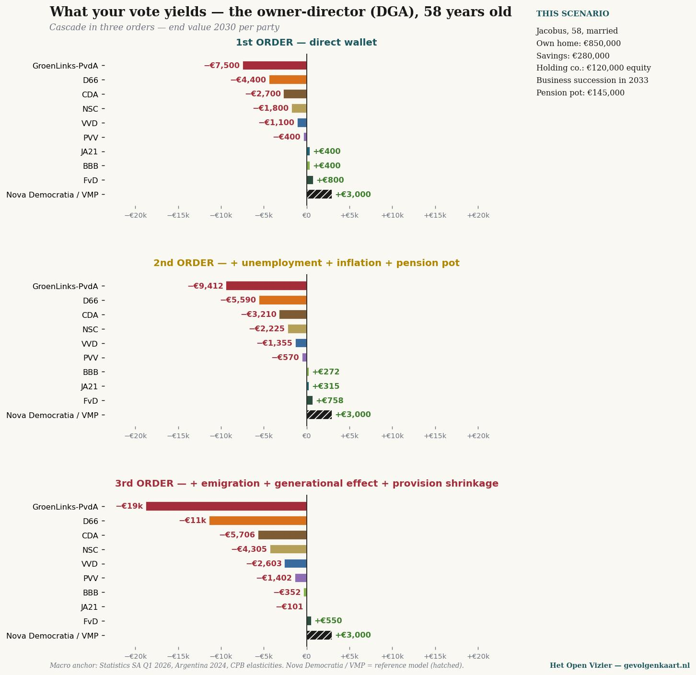
Open at full size →A newspaper for thinking without blinkers
For those who vote PRO, GroenLinks-PvdA or D66 — twenty positions, one matrix
Jacobus van Merksteijn · Malta, June 2026

Twenty personal and business profiles × ten Dutch parties. Figures give the 3rd-order effect (% of income for individuals, % of turnover for businesses) in 2030 — direct wallet impact plus unemployment, inflation, pension-pot erosion, emigration, generational effect and shrinking public services. Sources: CBS purchasing power, Statistics South Africa Q1 2026, Argentina 2024, CPB elasticities.
Below, for nine personal profiles, the cascade in three orders — what happens to your wallet, and what happens when the consequences are calculated through to 2030. Click on a chart for full size.
Owner of a family business, own home €850,000, savings €280,000, private company (BV) €120,000, pension pot €145,000. Business succession planned for 2033.

Open at full size →Family business, 95 cows, EU quality. Own land and barn, successor in training.
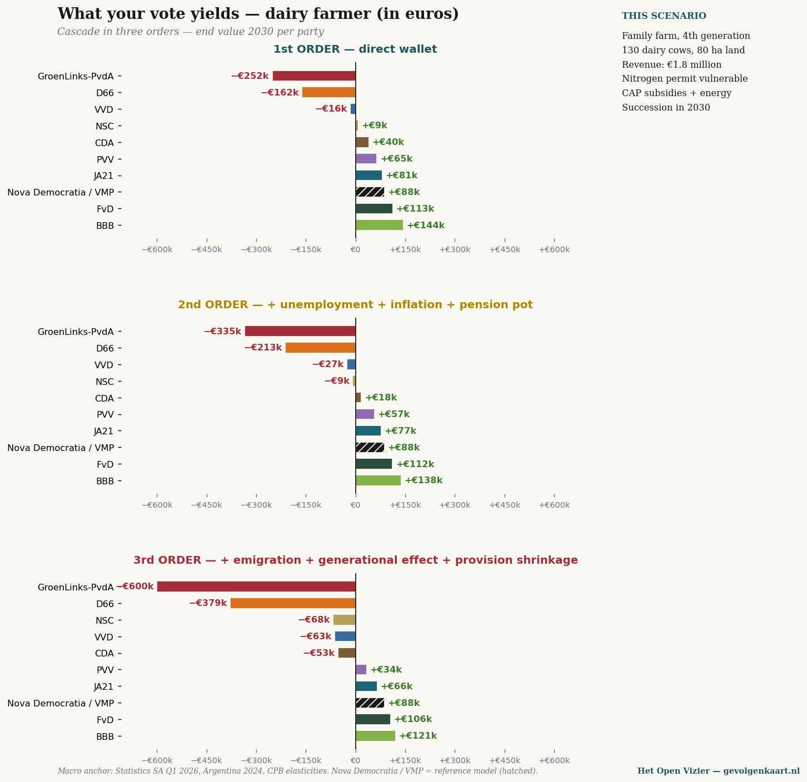
Open at full size →Five years in the Netherlands under the 30% ruling, two children, internationally mobile, partner works in tech.
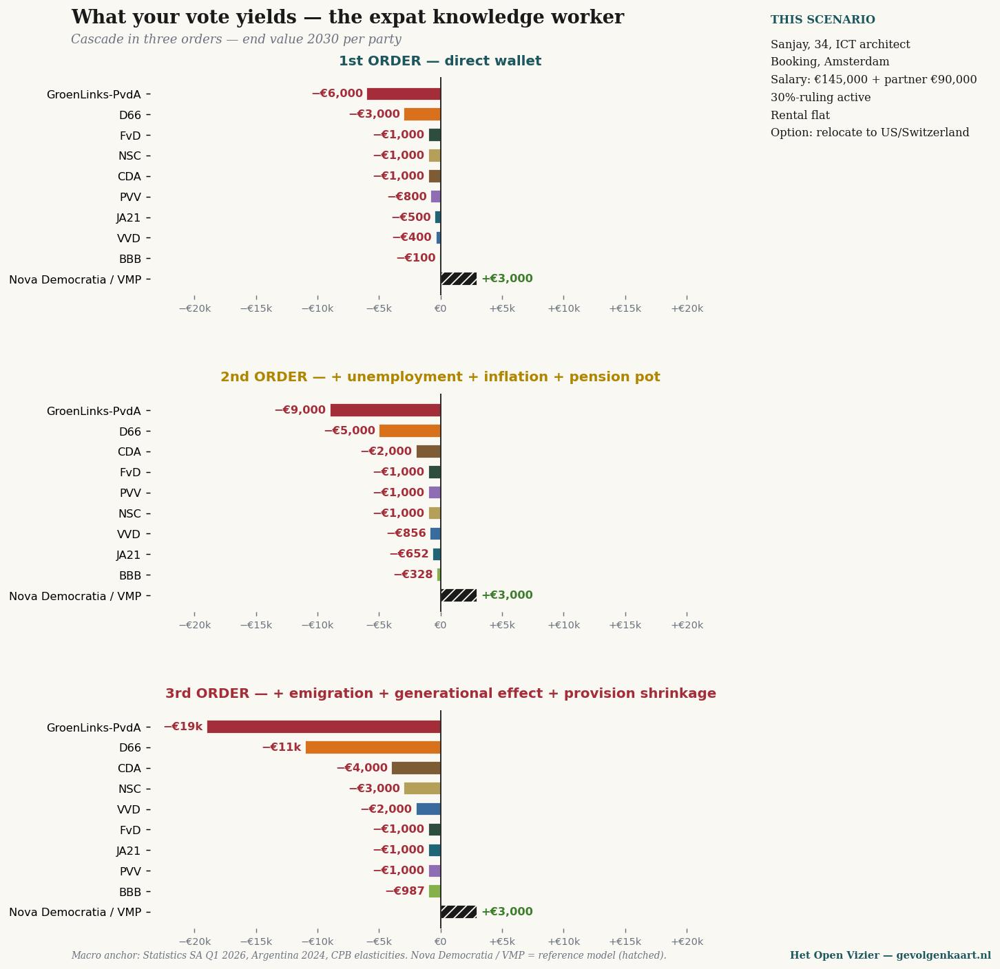
Open at full size →Both in ICT/finance, joint income €250,000, own home €650,000, investment portfolio €420,000.
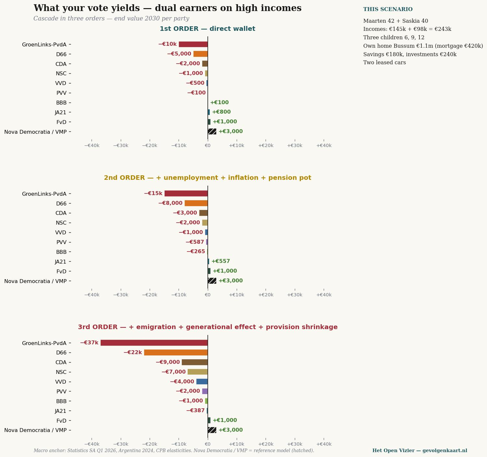
Open at full size →Median sole earner, partner at home with three children, own home €420,000, pension pot €78,000.
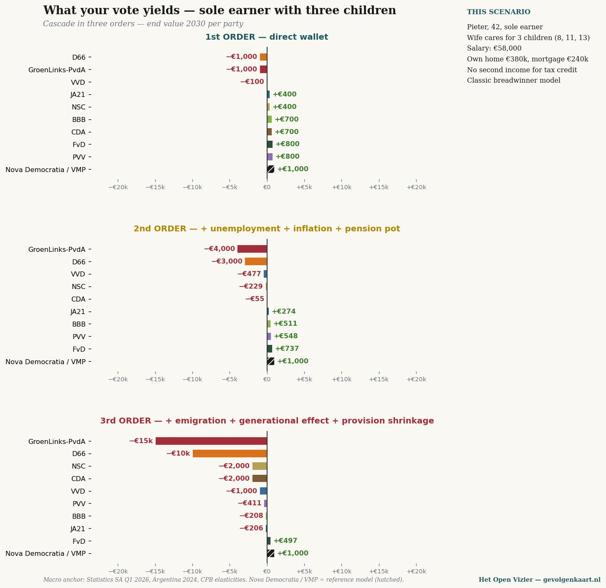
Open at full size →Two incomes combined at median, two young children, owner-occupied home €380,000, grandparents' holiday house.
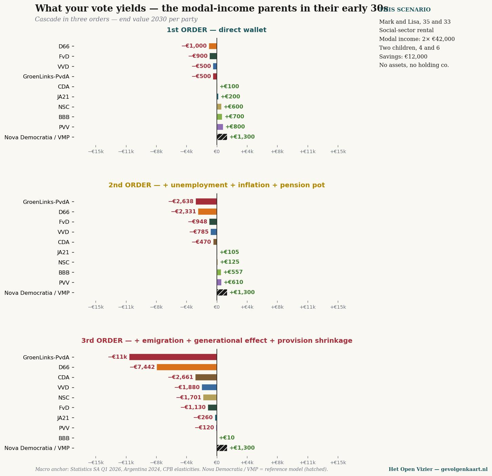
Open at full size →State pension (AOW) + occupational pension €38,000, own home paid off (€420,000), savings €95,000. Widow, children moved out.
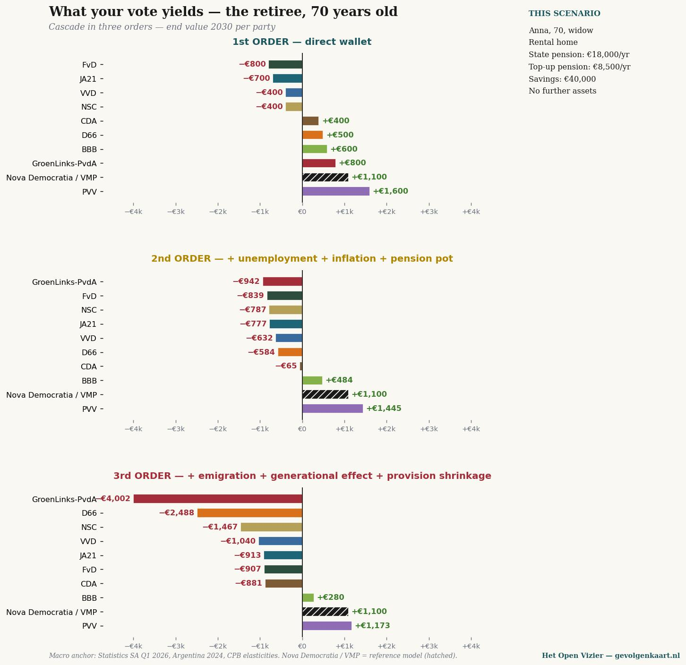
Open at full size →Multiple sclerosis, partial WIA disability benefit (€18,500 + unemployment supplement), partner works, renting social housing.
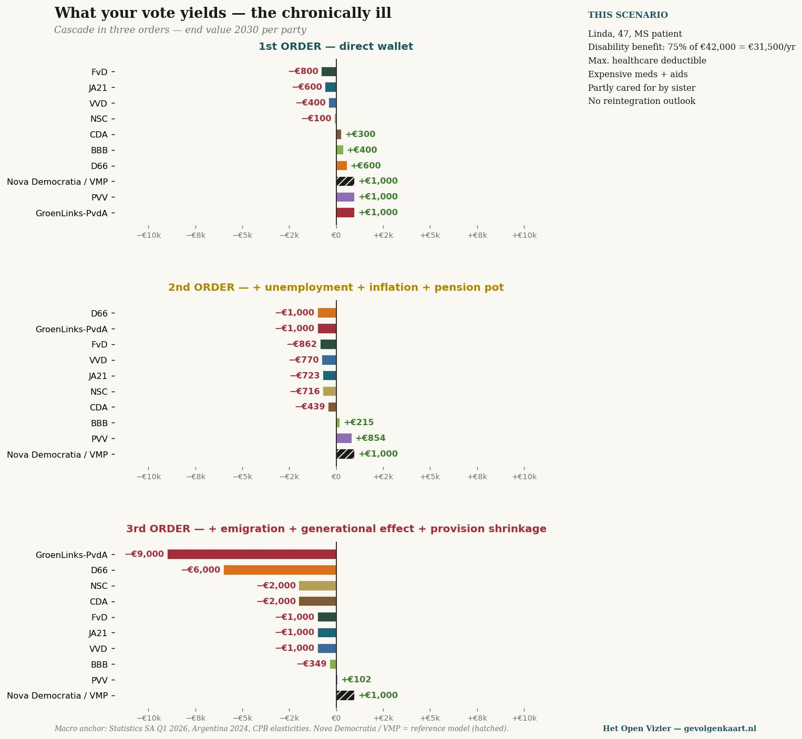
Open at full size →Full Wlz long-term care, personal contribution, pension income going entirely to care costs. Profile: costly in the 3rd-order scenario.
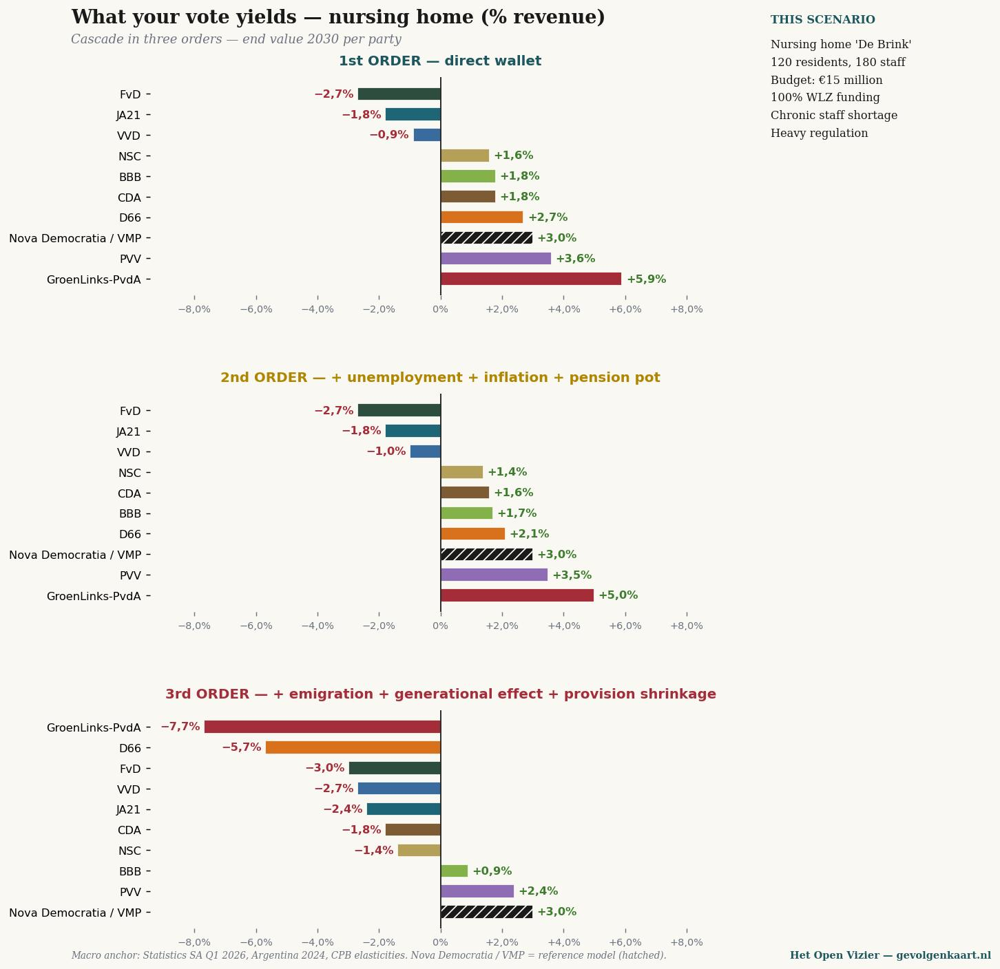
Open at full size →Three profiles — owner-manager, retiree, median parents — worked out in four zones: Plunderers, Followers, Movers, Defenders. The further from the blue plane (€0), the further your vote takes you from where you stand today. The green dashed line shows the BiCRS/Ethanol scenario: under this alternative path every party reaches a positive end value — recovery via biomass-to-ethanol lifts all positions above the €0 plane.
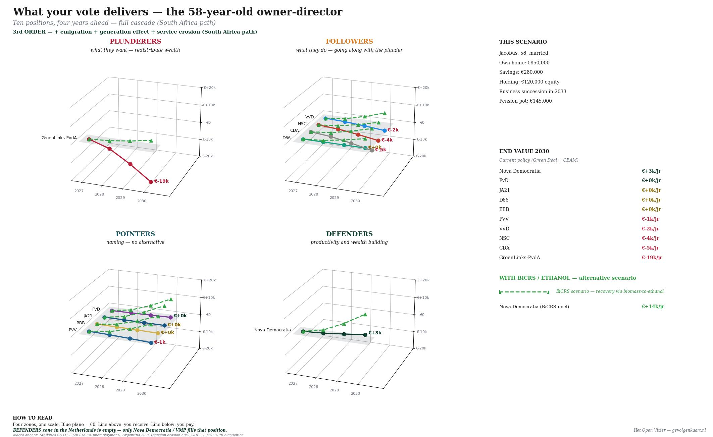
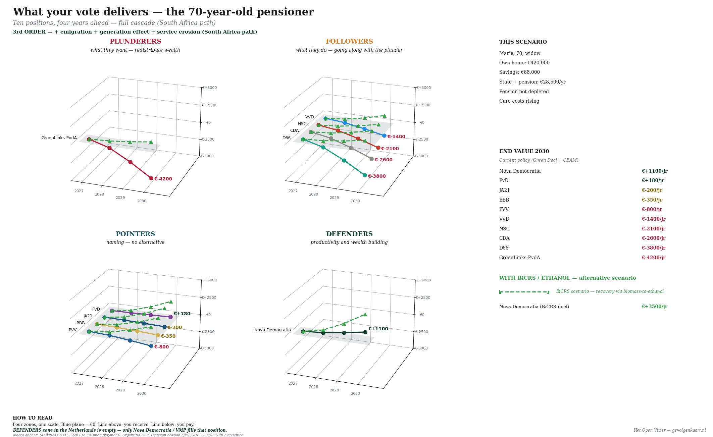
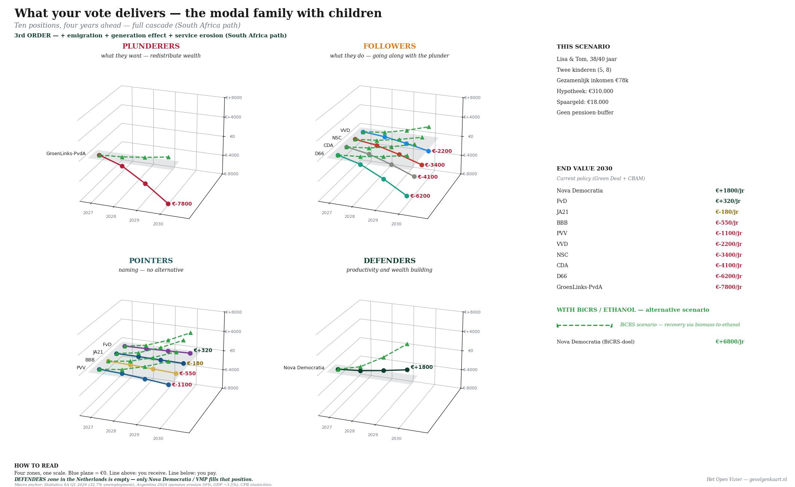
So much for the figures. From here: the analysis — three convictions, tested against those same figures.
This piece is not an attack. Not a call to action. Not an attempt to win you over.
This piece is a table of figures, followed by what those figures mean.
What you do with them is your business. We ask only one thing: read them to the end.
Those who vote PRO, GroenLinks-PvdA or D66 do so from a moral self-image. That is not meant cynically — it is an honest observation. The left-wing voter does not see themselves as an egoist but as a participant in a greater good.
Three convictions underpin that self-image:
First: the wealthy must be made poorer, because their wealth is either unearned or built at the expense of others. Redistribution is just.
Second: my job and my income are safer under the left. Right-wing parties cut jobs, slash wages, and give employers free rein.
Third: the union protects me, and the party that supports the union protects me. Collective bargaining is my safety net.
These three convictions are not challenged with arguments in this piece. They are tested against figures — three chapters, six scenarios, one conclusion. The numbers come from calculations based on CBS purchasing-power series, Statistics South Africa, Argentine pension data, and CPB elasticities.
Three orders are calculated throughout. The first order is what a party directly does to your wallet: taxes, benefits, state pension (AOW). The second order adds the consequences that flow from that policy: unemployment, inflation, pension-pot erosion. The third order calculates the full cascade: emigration of the wealthy, generational effect, shrinkage of public services — the path South Africa has taken over the past fifteen years.
One final preliminary remark. PRO is the progressive merger that GroenLinks-PvdA joined in 2025. In the calculation they are treated as one continuum, because the programme is essentially the same.
"If the rich have a little less, we have a little more."
— the implicit reasoning
The thought is intuitive and moral: wealth that accumulates at the top may flow back to those who have less. A wealth tax of 2 per cent, a higher box 2 rate, a millionaire's levy — it seems fair and it seems painless for those who themselves have no millions. Two scenarios show what actually happens.
Jacobus, 58, owner-manager — what happens to him
Jacobus runs a family business in Twente. Fifteen employees, a turnover of four hundred thousand euros, a home of his own, a private company (BV) with €120,000 in capital, a pension pot of €145,000, and savings he has built up through thirty years of work. Business succession is planned for 2033. By PRO/GL-PvdA standards he is rich. To his neighbours he is an ordinary entrepreneur.
{width="6.5in" height="6.296372484689414in"}
Cascade for the owner-manager — three orders, end value 2030 per party. Under PRO/GroenLinks-PvdA the loss builds from €7,500 (direct levy) via €9,412 (including unemployment effect) to €18,772 per year when the full cascade counts. D66 follows at a distance with −€11,414 per year.
The first order is what appears in the election manifesto: wealth tax plus box 2 plus millionaire's levy cost Jacobus approximately €7,500 per year in 2030. An amount that is felt but manageable for him.
Then the cascade begins. His customers become poorer — they spend less, his turnover falls. His employees become more expensive as unemployment pressure drives up labour costs. His pension pot earns less as capital leaves the country and stock prices sag. Second order: −€9,412.
In the third order his BV loses value — not through direct taxation, but because the business succession relief scheme is under pressure and highly qualified employees depart for Switzerland, Germany or the United States. The succession plan for 2033 becomes uncertain. Three of his fifteen employees lose their jobs over the course of four years. Jacobus himself loses €18,772 per year — more than twice the direct levy.
Maarten and Saskia, dual earners, combined €243,000
Maarten leads a team of twelve at a Dutch manufacturing company. Saskia works as head of HR at an international services firm. Three children, a bought home worth €1.1 million in Bussum with a mortgage of €420,000. Savings and investments combined well over €400,000. For the PRO voter: rich. For themselves: hard-working, heavily taxed, little free time.
{width="6.5in" height="6.154311023622047in"}
Cascade for the high-income dual earner. The direct levy under PRO/GL-PvdA: €11,500 per year. The full cascade: nearly €37,000 per year — fifteen per cent of the combined household income.
In the first order they lose €11,500 per year through the top rate, box 3 and the millionaire's levy. That is steep but bearable.
In the third order, on top of that: their investments evaporate, their mortgage rate rises through capital flight, their children face shrinking private education. And — this is crucial — for them the option of emigrating is real. Maarten can work in Frankfurt or Zürich. Saskia can too. When the loss passes €30,000 per year, they start doing the maths. And many thousands like them do the same.
What the figures say
When Jacobus and Maarten/Saskia together contribute €56,000 less per year to the Dutch economy, that money does not disappear from them and go to welfare. It disappears to Switzerland, to the United States, to Singapore. It never comes back. The tax base shrinks. Welfare becomes leaner — not richer.
That is not ideology. That is the statistical series of South Africa between 2010 and 2026. Wealth taxation was introduced, capital fled, unemployment rose to 32.7 per cent, youth unemployment to 60.9 per cent. The poverty that redistribution was meant to combat was deepened.
"The VVD will fire me. PRO/GL-PvdA protects me."
— the implicit reasoning
The idea is clear: right-wing parties stand closer to employers, and employers want staff as cheap as possible. Left-wing parties stand closer to employees, raise the minimum wage, protect unemployment benefits, demand permanent contracts. Two scenarios show what happens when you lose your job, and when you support a family as the sole earner.
Tom, 45, on unemployment benefit after company closure
Tom worked for eighteen years at a metal-processing company in Doetinchem. The company closed in 2026 — the German clients are gone, the order book is empty. Tom receives an unemployment benefit of 70 per cent of his last salary of €52,000. He has a mortgage of €280,000 on his home, a twelve-year-old child, and €25,000 in his savings account. He believes that PRO/GL-PvdA will protect him.
{width="6.5in" height="6.296372484689414in"}
Cascade for Tom on unemployment benefit. The difference between the first order (+€1,200) and the third order (very deeply negative) is dramatic — because he falls precisely into the group that is the first to find no new job when unemployment rises.
In the first order Tom benefits: PRO/GL-PvdA raises his unemployment benefit by €1,200 per year, extends its duration, offers retraining. That is factually correct. On paper he is better off.
But the second order makes his situation urgent. The unemployment pressure that follows from the higher tax burden — capital flees, entrepreneurs stop investing, customers buy less — makes it harder than ever for Tom to find a new job. Per cumulative percentage point of additional unemployment, that costs him on average four months longer without work. That is €6,000 per cumulative percentage point.
In the third order Tom becomes a statistic. After two years his unemployment benefit falls to social assistance level. His mortgage becomes unaffordable due to rising interest rates. His professional skills grow stale through inactivity. He ends up in the category of 'mismatch' — workers whose skills no longer match the market. Under PRO/GL-PvdA, Tom loses more than his annual income in the long run.
Pieter, 42, sole earner with three children
Pieter works as a team leader in an industrial bakery. €58,000 gross per year. His wife Marije looks after their three children aged eight, eleven and thirteen. They are a classic breadwinner household — a model that all parties except CDA, BBB and PVV have dismissed as outdated.
{width="6.5in" height="6.127155511811024in"}
Cascade for the sole earner with three children. Under PRO/GL-PvdA he loses in the third order €15,252 per year — nearly twenty-six per cent of his annual income. D66 follows with a loss of €10,279. Under CDA and BBB he ends up with more money.
The first order of PRO/GL-PvdA for Pieter: minus €1,000 per year. The general tax credit for his non-working wife is phased out further — a process that PRO/GL-PvdA and D66 wish to accelerate under the banner of 'individualisation'.
The second order: a family of five is highly sensitive to inflation. Food, clothing, sport, holidays — the €240 per index point in extra expenditure cuts directly into disposable income. The unemployment risk for Pieter is moreover doubly severe: in the event of redundancy, one hundred per cent of household income disappears, not half of it as with dual earners.
The third order: his mortgage becomes heavier due to rising interest rates, his pension accrual stagnates, and his three children are precisely the generation that will absorb the cascade in full. For Pieter: minus €15,252 per year — nearly a quarter of his gross salary. Not through a direct tax, but through what his vote sets in motion in the cascade.
What the figures say
The conviction that the left protects the employee holds at the level of the first order. The minimum wage goes up. Unemployment benefit is extended. Social assistance becomes more generous.
But the second and third orders show what happens to the jobs themselves. Unemployment rises through capital flight and investment contraction. The people who lose their jobs find no new ones. The sole earner who still has work sees his purchasing power eaten away by inflation.
A higher benefit against a stripped-out labour market is not protection. It is an off-ramp on the road to welfare dependency.
"Stronger together. Collective bargaining is my safety net."
— the implicit reasoning
For those who are members of FNV, CNV or a sector union, membership feels like insurance. The union fights for your collective labour agreement, your pension, your employment conditions. PRO/GL-PvdA and to a lesser extent D66 stand by its side. Two scenarios show what that protection actually delivers in the cascade.
Sandra, 38, single mother on social assistance
Sandra worked as a carer in home care until she burned out in 2024. She has been on social assistance since then, with an eight-year-old child. Her net income — social assistance plus housing benefit plus child-related budget plus healthcare allowance — is approximately €21,000 per year. She is the face of who PRO/GL-PvdA says it wants to help.
{width="6.5in" height="6.296372484689414in"}
Cascade for Sandra. The reversal is sharpest here: in the first order PRO/GL-PvdA gives her €1,300 per year extra. In the third order she loses €7,555 — well over a third of her annual income. The party that promises her the most harms her the most.
The first order of PRO/GL-PvdA for Sandra: plus €1,300 per year. Higher social assistance, more generous child-related budget, better healthcare allowance. This is not a lie — it is in the manifesto and is delivered once the party is in a coalition.
The second order is devastating for someone who lives on fixed outgoings. Sandra has 90 per cent of her income locked into rent, energy and groceries. Inflation hits her twice: her benefit rises with wage indexation, her expenditure with price indexation. The difference is a creeping impoverishment that grows larger every month. Moreover, the transition from welfare to work becomes practically impossible: the employment that she might one day return to is shrinking.
The third order completes the cycle. Care becomes scarce, the deductible rises, aids require a personal contribution. Education for her child becomes thinner — less tutoring, less support. The food bank becomes unavoidable. Sandra loses €7,555 per year in the cascade — more than a third of her income. Under GL-PvdA. The party that supports her.
Linda, 47, chronically ill (MS)
Linda worked for twenty years as a logistics planner. Multiple sclerosis forced her to stop in 2022. WIA disability benefit: 75 per cent of her last salary of €42,000 = €31,500 per year. Full deductible on healthcare every year, expensive disease-suppressing medication, aids, informal care provided by her sister. Linda is someone no party would dare to abandon. Yet the cascade shows what actually happens.
{width="6.5in" height="6.296372484689414in"}
Cascade for Linda, MS patient. PRO/GL-PvdA offers her €1,400 extra in the first order. In the third order she loses €9,842 per year — well over 31 per cent of her benefit. This is not an abstraction; this is waiting for a wheelchair that never arrives.
First order for Linda under PRO/GL-PvdA: plus €1,400 per year. Benefit up, deductible down, free physiotherapy restored. A party that takes her seriously.
Second order: inflation bites at her fixed outgoings and at healthcare costs that are not reimbursed. Medication becomes more expensive, aids become more expensive. When unemployment spreads through her environment, informal care partly falls away — her sister has troubles of her own. The €1,400 advantage has already vanished by year two.
Third order: healthcare becomes structurally scarcer as the budget runs into deficit. Waiting lists grow. Aids are kept in use longer than is good. Informal carers are no longer there — they have left or are themselves in need. Linda loses €9,842 per year. Not through a direct cut, but through what her vote has set in motion.
What the figures say
The union fights for collective-agreement wages and pension rights. That has value. But the collective agreement only holds when there is employment. The pension only holds when the pension pot earns a return. The benefit only holds when the tax base is intact.
In the cascade all three shrink. Tomorrow's collective-agreement wage deal is empty when the industrial base pulls out today. The pension that the FNV won is worth a tenth less when stock markets collapse through capital flight. The social assistance that PRO/GL-PvdA raises buys less when inflation drives prices up twice as hard.
First-order protection is not protection when the second and third orders are undermined. It is the illusion of protection. And illusions cost money — in this case more than a third of what Sandra and Linda take in.
Six people. Three orders. Three convictions.
According to the first conviction, Jacobus and Maarten/Saskia should be made poorer. In the cascade they are made poorer — but they take the whole country down with them. Their €56,000 reduction in contribution is not a transfer to Sandra. It is a loss, sucked away elsewhere.
According to the second conviction, Tom and Pieter should be better protected under the left. Tom loses more than his annual income through prolonged unemployment. Pieter loses a quarter of his salary through what happens to his colleagues and through what his wife can no longer offset via the tax credit.
According to the third conviction, Sandra and Linda should have gained the most. They lose a third of their income in the cascade. Not because PRO/GL-PvdA intends to harm them — that intention is absent — but because the policy demolishes the base on which their benefits rest.
The overall figures table
For those who want to see all the figures in one place: below the third-order outcome per scenario, per party, in 2030. Twenty life situations, ten positions. De Gevolgenkaart in one matrix.
{width="7.0in" height="5.342049431321085in"}
De Gevolgenkaart — all twenty scenarios at once. For individuals: percentage of annual income. For businesses: percentage of turnover. Read vertically to assess a party; read horizontally to find your situation. The colour is the consequence of your vote.
A pattern stands out. The left-hand column — PRO/GL-PvdA — is deeply red for almost every group. The right-hand column — Nova Democratia/VMP, a meritocratic reference model — is green for every group. Not because the one favours the other, but because the one model causes damage and the other does not.
The PRO voter is confronted with a paradox: the outcome of their vote is negative for almost every goal they profess to pursue. For those they want to help. For the country they live in. For their own future.
What this is not
This piece is not an argument for a different party. It is not a disguised campaign. It is not a sales pitch for Nova Democratia — which appears here as a reference model, not as an alternative on the ballot paper (because it is not there).
What this is: an attempt to place three articles of faith against three orders of figures. Without shouting. Without reproach. The figures are there. The sources are named below. You are free to reject them — but then you must explain why the cascade observed in South Africa, observed in Argentina, observed in every country that has followed this path, will not occur in the Netherlands.
That is a pointed question. We do not believe there is a pointed answer to it.
The figures in this piece are calculated using a three-step model.
The first order comes from the election manifestos of the ten positions, translated into the financial position of each scenario. Wealth tax, box 2, box 3, state-pension indexation, benefits, VAT — all from published material.
The second order combines four macro-effects with the so-called 'pressure index' per party. Per index point, unemployment changes by 0.018 percentage points per year (calibrated on Argentine figures 2024: 7.7 per cent rising to 8.5 per cent in one year), inflation by 0.055 per cent above the ECB target, pension-pot return by −0.033 per cent. For GL-PvdA with pressure index 45 that means: 0.8 percentage points extra unemployment per year, 2.5 per cent extra inflation, 1.5 per cent lower pension return.
The third order adds emigration effects, generational effects (children unemployed, parents providing support) and contraction of public services. Emigration is assumed at 8,000 high earners per €10bn of structural pressure per year, calibrated on South African outflow 2010–2026.
The macro anchors are:
The model has been kept deliberately transparent — no black box, no hidden assumptions. Anyone who wishes to reproduce or challenge the calculations can do so. The open Excel file will become available on gevolgenkaart.nl once the Gevolgenkaart launches as a platform.
WRITTEN BY JACOBUS VAN MERKSTEIJN WITH EDITORIAL AI SUPPORT
HET OPEN VIZIER — OPENVIZIER.ORG
DE GEVOLGENKAART — GEVOLGENKAART.NL
JUNE 2026
Four questions to ask yourself. No party is recommended. No answer is right or wrong. What you do with it is your business.
Which of the three convictions do you recognise as your own driving force?
Impoverish the wealthy / Own job safer / Union protects / none of the three
Which personal profile above most resembles your own position?
Choose the profile closest to you — in terms of age, income, family, profession.
Which column in the matrix represents the party you would vote for this year?
Find the column, look down to the row of your profile.
Does that figure match what you expected?
If yes: then you are voting consciously for that result. If no: then this is the first moment you have established that yourself.
You are done. What you do now is yours.

Jacobus van Merksteijn
Editor-in-chief of Het Open Vizier. Entrepreneur, developer of industrial and governance innovations (Carbon-Alert Ltd, TerraClean Ltd, GuardSkin Ltd). Writes about economic, ecological and political system questions from first-hand experience with the Brussels and The Hague decision-making machinery.